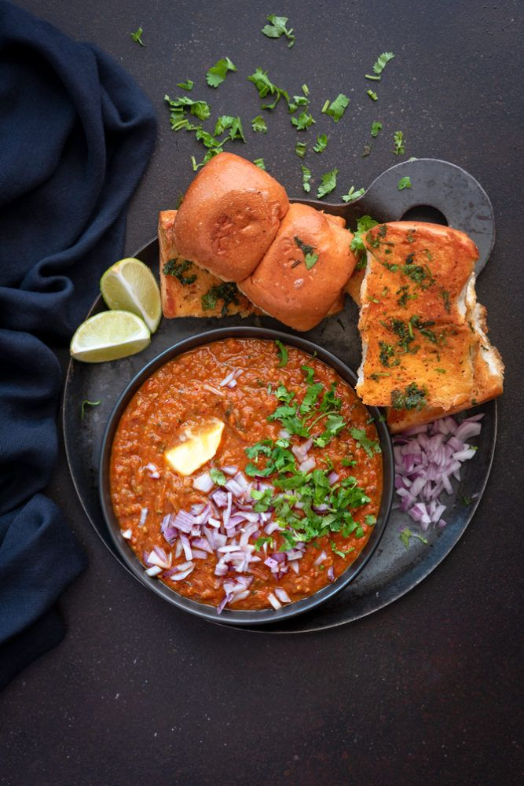
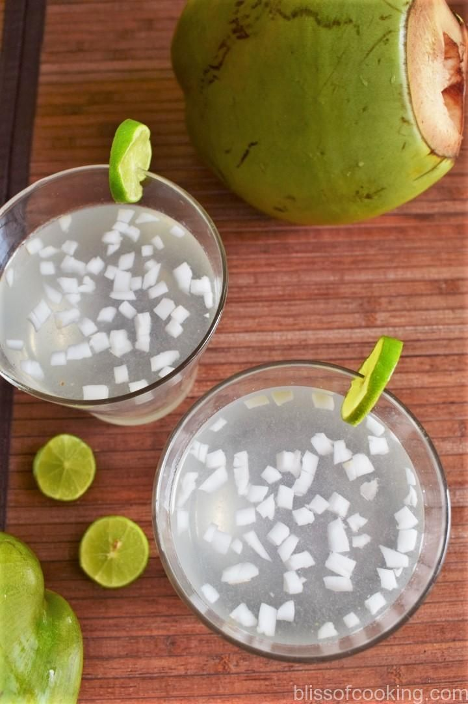

Starter Page
Esse dolorum voluptatum ullam est sint nemo et est ipsa porro placeat quibusdam quia assumenda numquam molestias.
West Indian Cuisine
Vada Pav
It consists of a spicy potato fritter (vada) sandwiched between a pav (bun), served with chutneys and fried green chilies.

Pav Bhaji
Pav Bhaji is a spicy mashed vegetable curry served with buttered bread rolls(pav).

Sol Kadhi
A refreshing drink made from kokum (a tangy fruit) and coconut milk, often consumed as a digestive aid after meals.
Dhokla
A steamed savory cake made from fermented rice and chickpea batter, Dhokla is soft, spongy, and often served with green chutney.
Thepla
A spiced flatbread made from wheat flour and fenugreek leaves, Thepla is a popular snack or breakfast dish in Gujarat.
Fafda-Jalebi
A classic Gujarati snack combo, Fafda is a crispy gram flour snack, often served with sweet Jalebi (fried spirals soaked in sugar syrup) and a side of raw papaya chutney.
Mohan Maas
A rich and creamy mutton dish cooked with milk, spices, and dried fruits.
Bebinca
A traditional Goan dessert, Bebinca is a multi-layered pudding made from flour, coconut milk, sugar, and ghee.
Sorpotel
A spicy meat stew made from pork or beef, flavored with vinegar, spices, and often served with sannas.